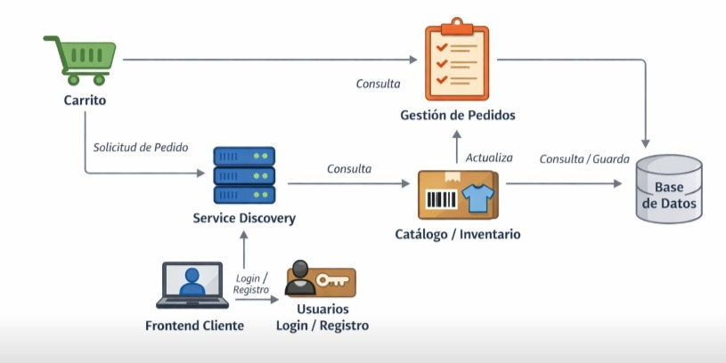

🌐 Actividad Clase 4
Comunicación entre Servicios + REST + Eventos + Service Discovery
Equipo: Juan David, Kenny, Diego, Jimmy
Proyecto: JKD-CLOTHING
🪜 1. Interacciones entre Servicios
Interacción 1
Frontend (Vista de Producto)
Servicio de Recomendaciones
ID del producto consultado, categoría, historial básico del usuario.
La tienda se muestra normal, pero sin sugerencias de productos relacionados.
Interacción 2
Gestión de Pedidos
Servicio de Facturación
ID del pedido, valor total, datos del cliente.
El pedido se guarda, pero la factura no se genera de inmediato; queda pendiente para reintento.
Interacción 3
Servicio de Usuarios
Servicio de Auditoría / Logs
Evento de inicio de sesión exitoso o fallido, fecha y hora.
El login funciona, pero no se registra el evento en los logs para auditoría.
🪜 2. REST o Eventos
| Interacción |
REST |
Evento |
¿Por qué? |
| 1 |
|
✔ |
Las recomendaciones se actualizan como respuesta a un evento “Producto Visto”. |
| 2 |
|
✔ |
La facturación se dispara cuando ocurre el evento “Pedido Confirmado”. |
| 3 |
|
✔ |
El registro de auditoría se maneja mejor por eventos sin afectar el login. |
🪜 3. Síncrono o Asíncrono
| Interacción |
Síncrono |
Asíncrono |
Justificación |
| 1 |
|
✔ |
Las recomendaciones no son críticas para continuar navegando. |
| 2 |
|
✔ |
La facturación puede generarse después de finalizar el pedido. |
| 3 |
|
✔ |
El registro de logs no debe afectar la experiencia del usuario. |
🪜 4. Eventos Importantes del Sistema
1️⃣ Producto visto por el usuario
2️⃣ Pedido confirmado
3️⃣ Usuario inició sesión
🪜 5. Análisis de Fallos
Servicio de Autenticación (Usuarios/Login)
Los usuarios no podrían iniciar sesión ni realizar compras.
Puede seguir mostrando productos, pero no permitir acciones que requieran cuenta.
Autenticación redundante, caché de sesiones, reintentos y monitoreo continuo.
🪜 6. Service Discovery
Los servicios que dependan de esa IP no podrán conectarse.
Consultando el registro central del Service Discovery.
Permite escalar servicios automáticamente y balancear carga.
Entre Frontend, Recomendaciones, Facturación y Usuarios.
🪜 7. Mini Diagrama
Dibujen:

💡 Ayuda rápida
REST → petición directa
Evento → algo ocurrió
Síncrono → espera respuesta
Asíncrono → continúa sin esperar
Service Discovery → permite encontrar servicios automáticamente